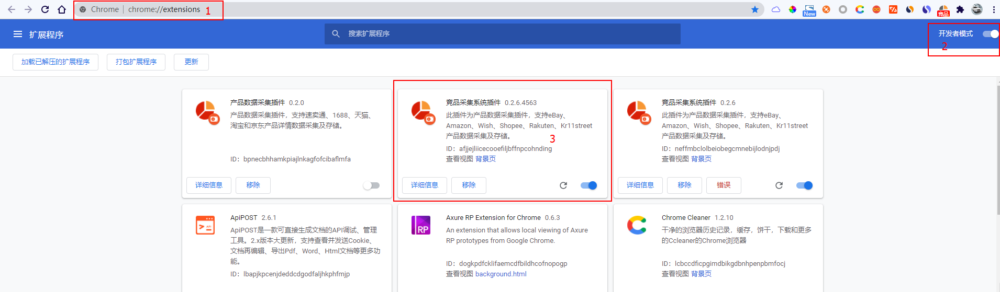
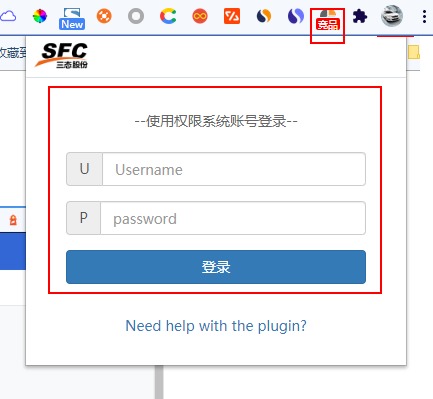
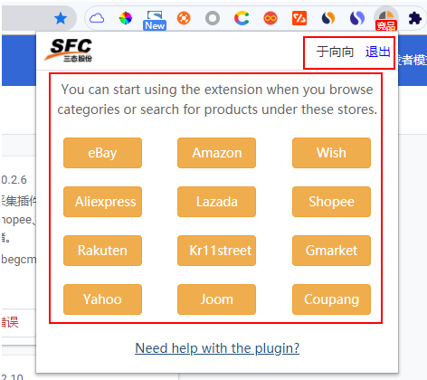
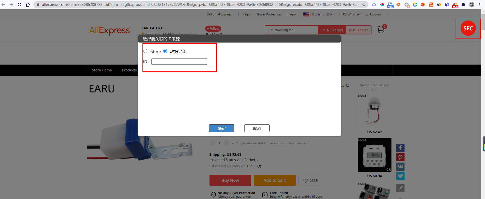
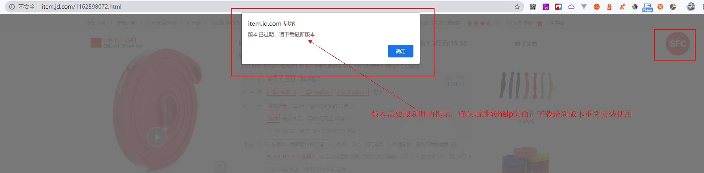
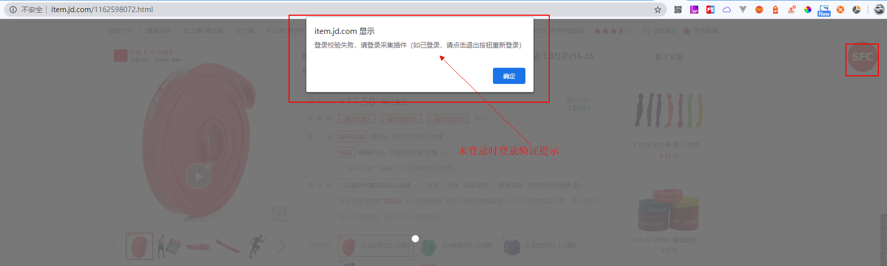
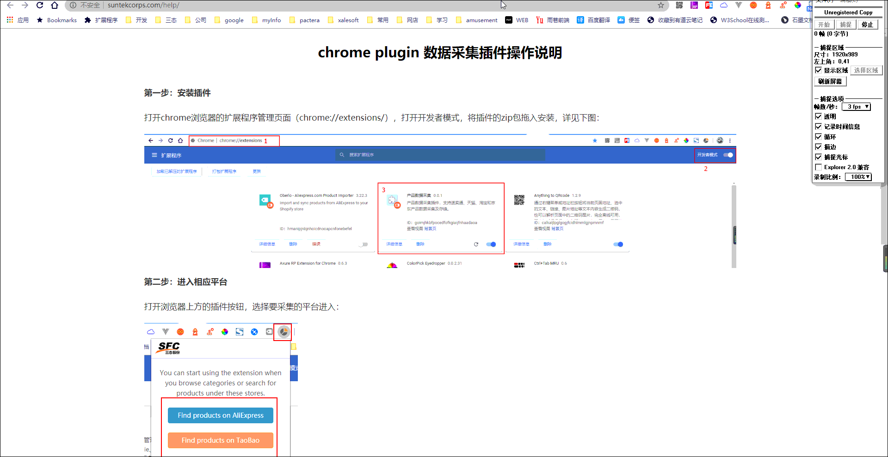

打开chrome浏览器的扩展程序管理页面（chrome://extensions/），打开开发者模式，将插件的zip包拖入安装（注意确认版本号，删除上个版本），详见下图：
 打开浏览器上方的插件按钮，选择要采集的平台进入：（Wish平台需要平台登录后才能进入页面）
进入平台后，查找自己需要采集的产品，进入详细页面，插件图标会高亮显示，此时表示此页面可以采集数据。可点击页面右上角的’SFC‘按钮，页面会进入采集中的提示遮罩（会有相关的验证提示，详见下图a、b），等待直到完成采集，提示弹窗保存成功（如有提示无法采集等错误，直接联系开发处理）。
a、采集时提示选择关联id操作
b、采集时验证当前版本是否最新
***提示版本过期时，请确认进入help页面，下载最新版本，重新安装使用*** c、采集时验证当前插件登录情况
***提示登录校验失败，1：未登录，请使用权限系统的账号登录使用*** ***提示登录校验失败，2：登录账号过期，请退出登录后重新登录即可使用***  